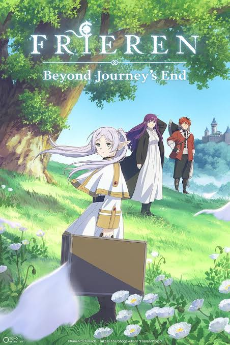

Frieren: Beyond Journey's End Season 2

Genre: Adventure, Fantasy, Drama
Episodes: 28
Studio: MADHOUSE
Rating: 9.0/10
Synopsis
Frieren: Beyond Journey's End follows the elven mage Frieren after the defeat of the Demon King. Unlike her human companions, Frieren lives for hundreds of years. The story follows her journey as she begins to understand the relationships and memories she once took for granted.
Trailer
Our Review
Frieren continues to stand out because of its emotional storytelling, beautiful animation, and strong character development. The series takes its time developing its characters while still providing exciting fantasy adventures.